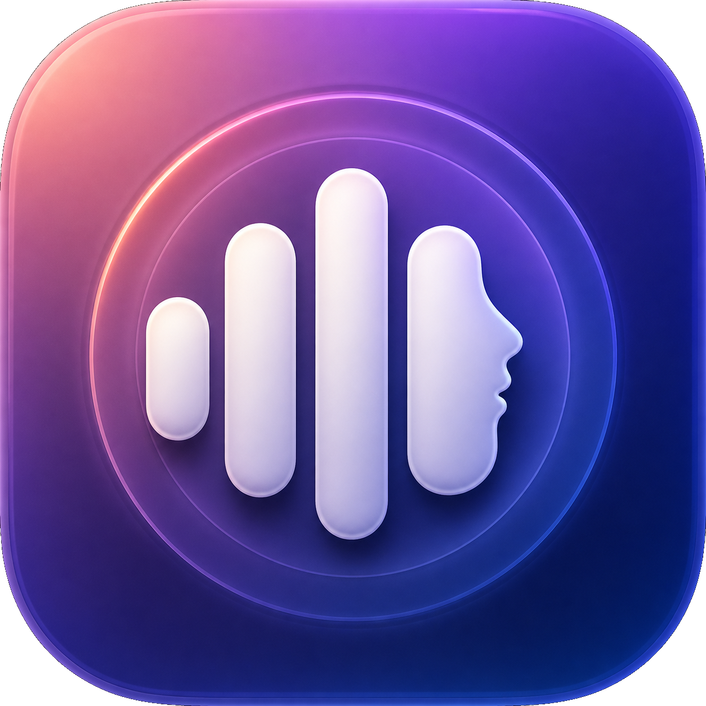

Votre voix, localement
Créez un profil vocal à partir d’une courte lecture. L’échantillon reste sur votre Mac.

VoixLocale TéléchargerGratuit · macOS · 100 % local
VoixLocale transforme vos textes en MP3 avec votre propre voix, directement sur Apple Silicon. Aucun abonnement, aucune API distante et aucun envoi de vos enregistrements.
macOS 14+ · Apple Silicon M1 ou ultérieur · Version bêta
La lumière du matin traverse doucement la fenêtre.
Chaque phrase trouve son rythme, avec une voix naturelle et claire.
● Hésitations légères
Tout ce qu’il faut
Une interface native et directe pour produire des lectures longues sans exposer votre voix à un service en ligne.
Créez un profil vocal à partir d’une courte lecture. L’échantillon reste sur votre Mac.
Collez votre texte ou importez un fichier TXT, PDF ou DOCX, puis exportez un MP3.
Réglez le débit, ajoutez de légères hésitations et profitez de silences nettoyés.
Qwen3-TTS et MLX utilisent le GPU du Mac sans dépendre d’une API payante.
Écoutez, mettez en pause, reprenez ou arrêtez la lecture directement dans l’application.
Vumètre, détection du silence et réduction douce du bruit améliorent chaque profil.
Votre voix vous appartient
La synthèse est exécutée par MLX sur le GPU de votre Mac. Vos textes, profils vocaux et MP3 restent dans votre session utilisateur.
Simple par défaut
Lisez le texte proposé pendant une vingtaine de secondes.
Copiez-collez quelques pages ou importez votre document.
Choisissez le débit, écoutez puis enregistrez votre MP3.
Avant l’installation
macOS 14+, processeur M1 ou ultérieur, 16 Go de mémoire minimum. L’application nécessite uv et FFmpeg via Homebrew.
Utilisez uniquement votre voix ou celle d’une personne qui vous a donné son autorisation explicite.
Prêt à écouter autrement ?
Téléchargez gratuitement la bêta ou explorez le code source.